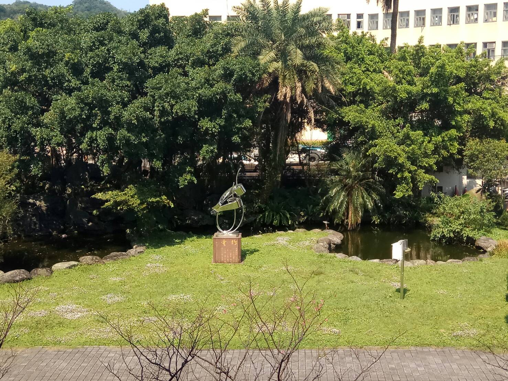
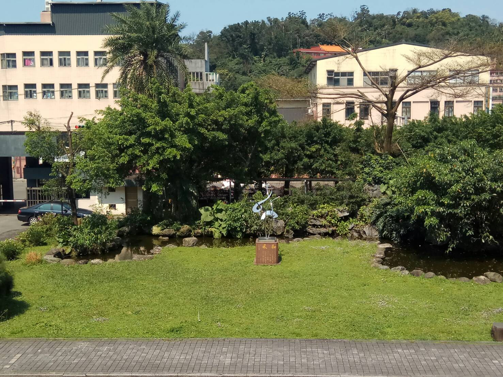

左邊和右邊各有一座生態池，不過從整池池水都綠化的程度來看，應該屬於年久失修毒死魚的情況，
生態池周圍是一片草皮、幾棵櫻花樹和好幾叢白色、粉色的小花叢，不仔細看的話，會把白花當成用過的衛生紙，
平常沒有看過有人在修剪這邊的草，估計不是假日修剪就是噴了一大堆的抑制藥，
而夏天晚上的時候會有吵到不行的"大自然演唱會"。
兩邊各有一個其他學校送的金屬抽象雕塑，比較特別的是在面對群英樓右手邊的那塊花圃上面，有一個觀測天氣狀況的百葉箱，
能觀測的有最高最低和平均氣溫、氣壓、風向、空氣濕度和日雨量，前陣子還在科展上大獲好評 !
點擊我回到上一頁